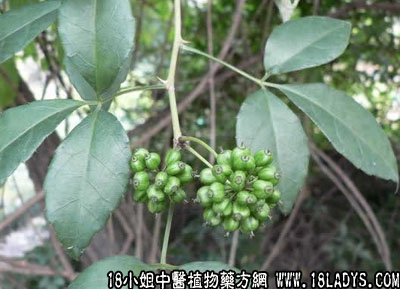

白簕根(中药材植物名:白簕花)(植物科目:五加科)

别名：鸡柱簕、风党簕。
植物名：白簕花。
生长环境：本品为扳援灌木。生于山地灌木丛中，或树状的边缘。
分布：广州和广东各地均有出产，我国除北部外，都有分布，此外亚洲热带地区亦有。
采集期：全年。
入药部分：根。
自己采地点：郊外。
性味：性平、味苦、气微香。
功能：化气、除痰、散瘀。
主治、用量和用法：1、内伤咯血：干根1至2两，猪瘦肉适量、清水煎服；2、气痛：用法同上；另跌打肿痛，配伍用。
附录：（叶）治撞红，苏痨：用生叶两，捣烂服汁，加米酒敦炖一小时服。
（方歌）咳血内伤白簕根，瘦肉同煲效堪珍，若遇苏痨撞红症，酒炖簕叶建功勋。